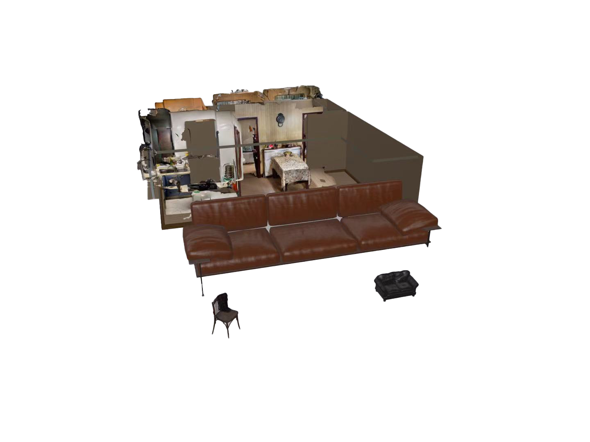
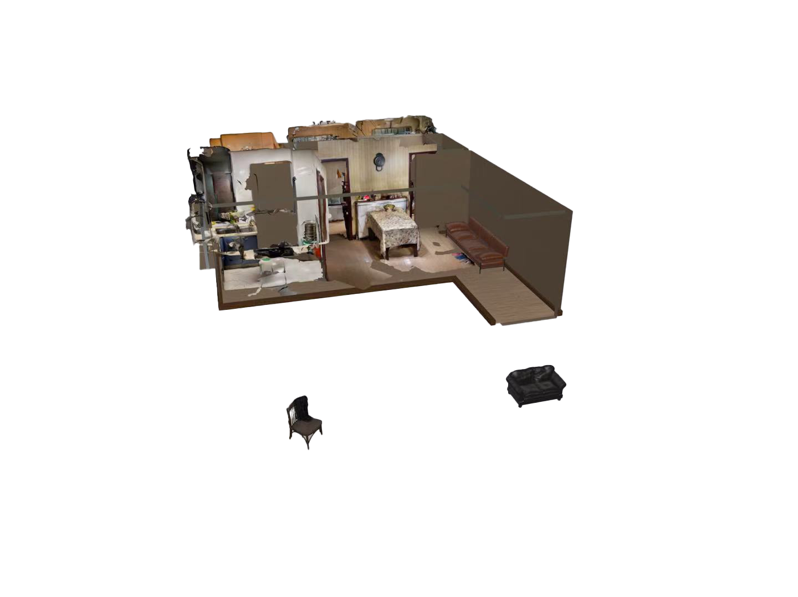

Personal
Portfolio
01
Cultural Research to AI Concept Video

Project Overview
Inspired by Tibetan culture, this VR project lets users experience cultural events such as horse racing, sutra printing, and ritual ceremonies in an immersive virtual environment, creating an interactive visual narrative.
Core Elements
- Cultural scenes & characters
- VR interactive experience
- Early-stage visuals for AI concept video


Storyboard


02
AR Care Companion App Design
Project Overview
EchoMe is an AR-based mobile system designed to help older adults regain spatial awareness, agency, and daily participation at home. The app uses AR to scan the home environment, supports micro-decisions, and allows family members to share memories, revisit photos, and interact digitally in a shared emotional space.
Core Elements
- AR spatial recognition for daily interactions
- Micro-decision and social participation modules
- Family memory sharing and emotional connection
Research & User Needs

Key Screens
Spatial Navigation

Step 1

Step 2

03
VR Experience
Hero / Key Visual

Morphing Mirror
Project Overview
Morphing Mirror is an immersive VR artwork where users see their virtual avatar in a mirror that continuously morphs with their body movements. The experience emphasizes embodied feedback and performativity, allowing participants to explore how algorithmic judgment operates through subtle, real-time body transformation.
Core Elements
- Mirror-based avatar morphing
- Real-time VR interaction
- Exploration of algorithmic and bodily feedback
Environment Setup
Embodied Interaction
Character Model
04
Virtual Album Space
Project Overview
A VR "memory space" where users can revisit and organize family photos in a shared virtual environment. Multiple participants can enter the space simultaneously and interactively decorate and explore the room together.
Core Elements
- Shared VR memory space for family photos
- Interactive spatial decoration
- Multi-user collaboration
05
VR Phone Repair
Project Overview
This lightweight VR project focuses on mobile phone repair, highlighting scene setup, object observation, basic user interactions, and subtle environmental animations to enhance immersion.
Core Elements
- Virtual repair workspace
- Interactive VR exploration of objects
- Basic user interactions and animated environment elements